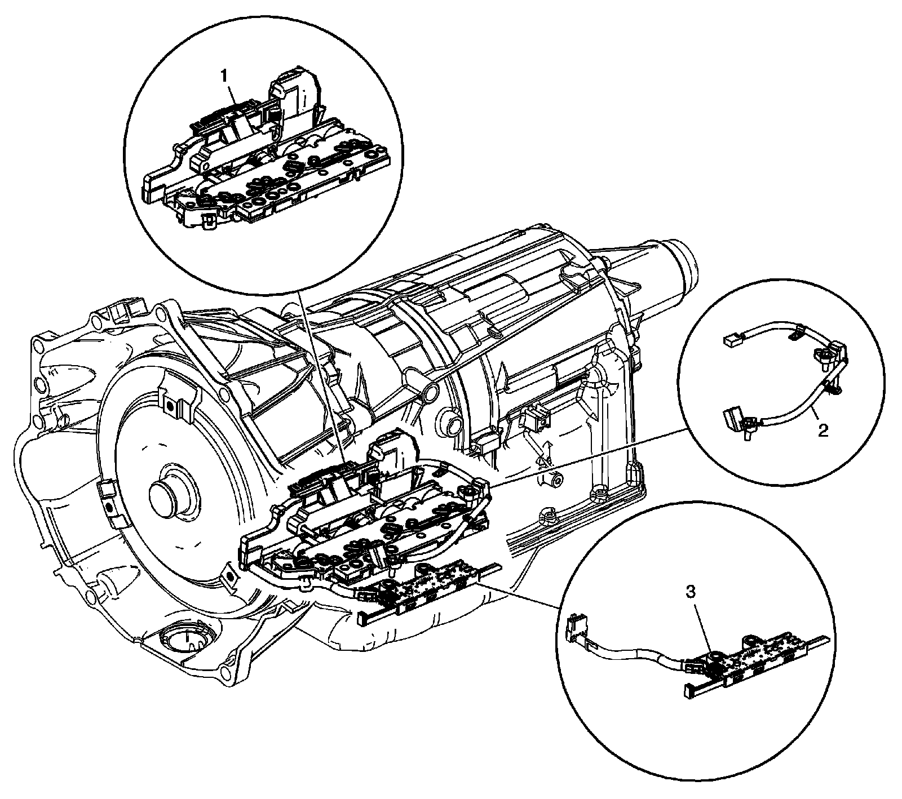

Powertrain Component Views
Powertrain Component Views
Transmission Electronic Components
Electronic Components:

1 - Control Solenoid (with Body and TCM) Valve Assembly
2 - A/Trans Input and Output Speed Sensor Assembly
3 - A/Trans Manual Shift Shaft Position Switch Assembly